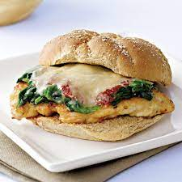

Chicken Parmesan Sandwich

Ingredients:
- 4 boneless, skinless chicken breasts
- 1 cup all-purpose flour
- 2 eggs, beaten
- 1 cup breadcrumbs
- 1/4 cup grated Parmesan cheese
- 1 tsp dried oregano
- 1/2 tsp garlic powder
- Salt and pepper, to taste
- 1/4 cup olive oil
- 1 cup marinara sauce
- 1 cup shredded mozzarella cheese
- 4-6 sub rolls
Instructions:
- Pound chicken breasts to an even thickness.
- Set up a breading station with three shallow dishes: one with flour, one with beaten eggs, and one with breadcrumbs, Parmesan cheese, oregano, garlic powder, salt, and pepper.
- Dredge each chicken breast in flour, then dip in beaten eggs, and coat in breadcrumb mixture.
- In a large skillet, heat olive oil over medium-high heat. Add chicken breasts and cook for 4-5 minutes per side, or until golden brown and cooked through.
- Remove chicken from skillet and top with marinara sauce and shredded mozzarella cheese.
- Return to the skillet and cook until cheese is melted and bubbly.
- Slice sub rolls in half and toast if desired.
- Place chicken on the rolls and serve immediately.